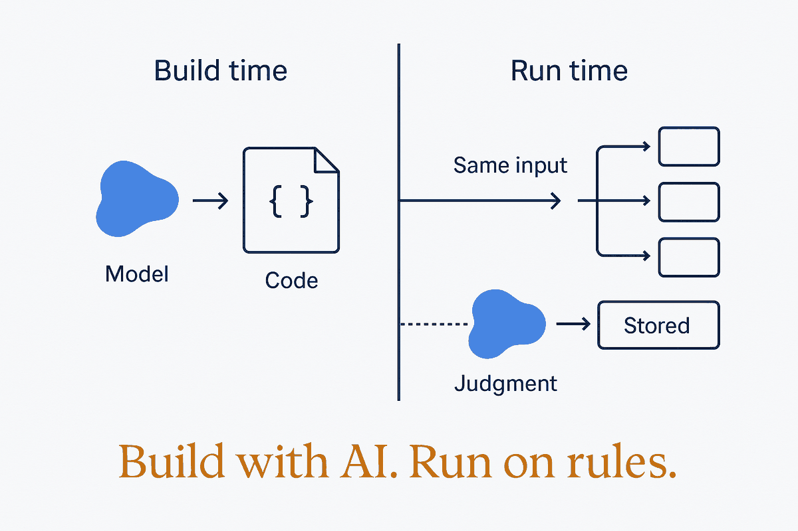

Use AI to write the code, then let the code run. Call a model at run time only where every input needs fresh judgment — and then store the answer.

"I built an app with AI" describes two different systems. In the first, the AI wrote the code: a script, a query, a set of rules. Once it's written, the model is gone, and the app runs on plain code that gives the same answer on every run, costs nothing per run and can be tested like any other software. In the second, the app calls a model through an API every time it runs. That app pays per call, can give a different answer to the same input, and sends its data to a provider on every request. Both are valid. They are not the same thing, and most people who build with AI can't tell you which one they built.
The difference is when the AI does its work. At build time, the AI's output is code, and code is deterministic. At run time, the AI's output is the answer itself, and that answer is probabilistic. An invoice total, a roster, a date calculation, a file rename: none of these need judgment on each run, so a model call there buys you cost and variance for nothing. Reading a free-text customer email, describing a photo, judging tone: here the input is new every time and no rule you can write covers it, so the model belongs in the running system.
The test is one question per step: does this step need judgment on unseen, unstructured input every time it runs? If not, have the AI write the code and keep the model out of the loop. If yes, call the model, but give the call structure: a fixed output schema, a validation check, and storage of the result so you never pay for the same interpretation twice. The best systems mix the two. One paid model pass turns raw material into data, and cheap rules derive everything else from that data.
This is where modeling earns its place. You can only move logic out of the model and into code when the data and the rules are written down. Skip the model of the domain and every decision stays a prompt, so you pay for it on every run and it can drift between runs. A clear model of the domain is what lets you remove the AI from the running system.